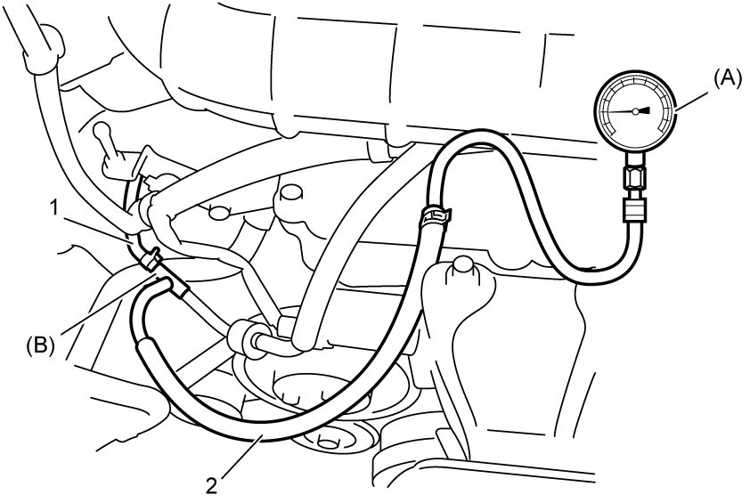

1D
| Turbocharger On-Vehicle Inspection |
1)Warm up engine to normal operating temperature.
2)Stop engine after warming up.
3)For M/T model, place gear shift lever in “Neutral”, apply parking brake and block drive wheels.
For A/T model, place select lever in “P”, apply parking brake and block drive wheels.
For A/T model, place select lever in “P”, apply parking brake and block drive wheels.
4)Remove engine cover. 
5)Disconnect air bypass valve control hose No.4 (1) from check valve.
6)Connect special tool (A) and (B), and a suitable hose (2) as shown in figure.


 "Expand image")
7)Measure negative pressure under the following conditions.
Accelerator pedal: Depress fully for 5 seconds and release
Engine speed: 2,500 – 4,000 rpm or more
If negative pressure is out of specified range, the following causes are suspected.
Accelerator pedal: Depress fully for 5 seconds and release
Engine speed: 2,500 – 4,000 rpm or more
Negative pressure specification
–76 to –70 kPa (–0.8 to –0.7 kgf/cm2, –11.0 to –10.1 psi, –0.76 to –0.70 bar)
•Fault of waste gate valve
•Leakage of vacuum pressure
•Malfunction of turbocharger
•Leakage of vacuum pressure
•Malfunction of turbocharger